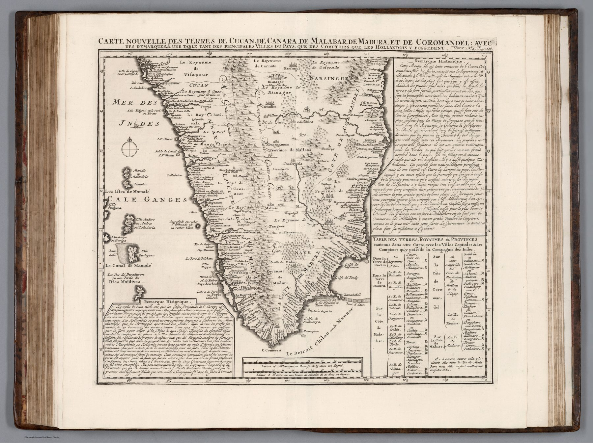

← Baroque Mughals and Companies

The complete sheet
The full title extends beyond the map itself: it promises remarks, a table of principal towns and an account of the trading posts held by the Dutch. The object is therefore designed as a combined map and reference page.
The coast of the companies
Konkan, Canara, Malabar, Madurai and Coromandel are the coasts along which European companies maintained ports, factories and alliances. The table converts that shoreline into an inventory of establishments. Political and cultural regions are reorganised around points of commercial access.
Information as comparison
The reader can move between map, remarks and table, comparing settlements and company presence. This is characteristic of the Atlas Historique: geography expanded into an encyclopaedic apparatus that makes distant places available for systematic consultation.
The gaze
The table of Dutch posts is the sheet’s real index. A reader consults the coast by establishment – which company holds what, and where – and the kingdoms of the interior appear as the hinterland of those points. Chatelain’s southern India is arranged the way a factor would arrange it.